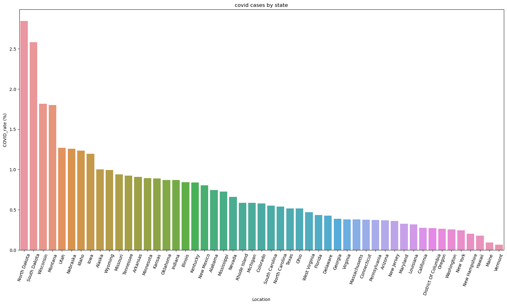

The relationship between COVID policies and cases#
import numpy as np
import pandas as pd
import matplotlib.pyplot as plt
import seaborn as sns
from sklearn.preprocessing import OneHotEncoder
from sklearn.model_selection import train_test_split
from sklearn.linear_model import LinearRegression
from sklearn.metrics import mean_squared_error
from sklearn.ensemble import RandomForestRegressor
from sklearn import tree
from sklearn.metrics import roc_curve, roc_auc_score
Analyze covid cases by state#
covid = pd.read_csv("data/covid.csv")
covid = covid[covid["Location"] != "United States"]
covid["COVID_rate (%)"] = 100*(covid["Oct_2020_Cases"] / covid["Total Population"])
covid_sorted = covid.sort_values("COVID_rate (%)", ascending = False)
covid_sorted.head()
fig, ax = plt.subplots(figsize=(20, 10))
sns.barplot(data=covid_sorted, x="Location", y="COVID_rate (%)")
plt.title("covid cases by state")
ax.set_xticklabels(ax.get_xticklabels(), rotation=70);

How different gathering bans affect covid affection rate?#
display(covid["Large Gatherings Ban"].unique())
covid_gathering_bans = (pd.DataFrame(covid.groupby("Large Gatherings Ban")["COVID_rate (%)"].mean())
.sort_values("COVID_rate (%)", ascending = False))
covid_gathering_bans
fig, ax = plt.subplots(figsize=(20, 10))
#sns.barplot(data=covid_sorted, x="Location", y="COVID_rate (%)")
ax.set_xticklabels(ax.get_xticklabels(), rotation=70);
sns.violinplot(data=covid, x="Large Gatherings Ban", y="COVID_rate (%)", order=covid_gathering_bans.index)
#sns.lineplot(
# x=covid_gathering_bans.index,
# y=covid_gathering_bans["COVID_rate (%)"],
# style="event"
#)
covid_gathering_bans
array(['No Limit', '>50 Prohibited', 'All Gatherings Prohibited',
'>10 Prohibited', '>25 Prohibited'], dtype=object)
/tmp/ipykernel_1155/3742168016.py:9: UserWarning: FixedFormatter should only be used together with FixedLocator
ax.set_xticklabels(ax.get_xticklabels(), rotation=70);
| COVID_rate (%) | |
|---|---|
| Large Gatherings Ban | |
| >50 Prohibited | 0.923554 |
| >25 Prohibited | 0.919531 |
| No Limit | 0.906760 |
| >10 Prohibited | 0.534330 |
| All Gatherings Prohibited | 0.416476 |
we could see that gathering bans are useful in preventing the spread of COVID
regression covid infection rate on other variables#
features = ["COVID_rate (%)", "Depression.2020", "Employer", "Medicaid", "Medicare", "Uninsured", "Large Gatherings Ban", "Restaurant Limits"]
covid1 = covid[features]
numerical = list((covid1.dtypes[covid1.dtypes == 'float64'].index) | (covid1.dtypes[covid1.dtypes == 'int64'].index))
categorical = list((covid1.dtypes[covid1.dtypes != 'float64'].index) & (covid1.dtypes[covid1.dtypes != 'int64'].index))
categorical
/tmp/ipykernel_1155/187220128.py:1: FutureWarning: Index.__or__ operating as a set operation is deprecated, in the future this will be a logical operation matching Series.__or__. Use index.union(other) instead.
numerical = list((covid1.dtypes[covid1.dtypes == 'float64'].index) | (covid1.dtypes[covid1.dtypes == 'int64'].index))
/tmp/ipykernel_1155/187220128.py:2: FutureWarning: Index.__and__ operating as a set operation is deprecated, in the future this will be a logical operation matching Series.__and__. Use index.intersection(other) instead.
categorical = list((covid1.dtypes[covid1.dtypes != 'float64'].index) & (covid1.dtypes[covid1.dtypes != 'int64'].index))
['Large Gatherings Ban', 'Restaurant Limits']
def ohe(data, column):
enc = OneHotEncoder()
enc.fit(data[column])
encoded_data = pd.DataFrame(enc.transform(data[column]).toarray().astype(int))
encoded_data.columns = enc.get_feature_names_out()
encoded_data = encoded_data.set_index(data.index)
return encoded_data
ohe_df = pd.concat([covid1[numerical], ohe(covid1[categorical], categorical)], axis=1)
ohe_df.head()
| COVID_rate (%) | Depression.2020 | Employer | Medicaid | Medicare | Uninsured | Large Gatherings Ban_>10 Prohibited | Large Gatherings Ban_>25 Prohibited | Large Gatherings Ban_>50 Prohibited | Large Gatherings Ban_All Gatherings Prohibited | Large Gatherings Ban_No Limit | Restaurant Limits_- | Restaurant Limits_New Service Limits | Restaurant Limits_Newly Closed to Indoor Dining | Restaurant Limits_Reopened to Dine-in Service | Restaurant Limits_Reopened to Dine-in Service with Capacity Limits | |
|---|---|---|---|---|---|---|---|---|---|---|---|---|---|---|---|---|
| 0 | 0.745250 | 33.8 | 0.469639 | 0.195321 | 0.158831 | 0.101714 | 0 | 0 | 0 | 0 | 1 | 0 | 0 | 0 | 1 | 0 |
| 1 | 1.001716 | 27.1 | 0.481289 | 0.213177 | 0.094280 | 0.120369 | 0 | 0 | 0 | 0 | 1 | 0 | 0 | 0 | 1 | 0 |
| 2 | 0.367290 | 27.2 | 0.444624 | 0.223905 | 0.155921 | 0.106147 | 0 | 0 | 1 | 0 | 0 | 0 | 1 | 0 | 0 | 0 |
| 3 | 0.906918 | 28.3 | 0.418750 | 0.272687 | 0.156044 | 0.082839 | 0 | 0 | 0 | 0 | 1 | 0 | 0 | 0 | 0 | 1 |
| 4 | 0.276735 | 29.7 | 0.473513 | 0.263108 | 0.109437 | 0.071597 | 0 | 0 | 0 | 1 | 0 | 0 | 0 | 0 | 0 | 1 |
X = ohe_df.drop("COVID_rate (%)", axis=1)
y = ohe_df["COVID_rate (%)"]
X_train, X_test, y_train, y_test = train_test_split(X, y, test_size = 0.4, random_state = 0)
model = LinearRegression().fit(X_train, y_train)
print('model intercept :', model.intercept_)
print('model coefficients : ', model.coef_)
print('Training Accuracy: ', model.score(X_train, y_train))
model intercept : 3.819279249016801
model coefficients : [-0.01522958 -2.86343683 -3.30809215 -3.93673412 2.1371601 -0.03378686
0.4202171 -0.38477096 -0.10947185 0.10781256 1.2697461 -0.22060498
-0.1507367 -0.42249257 -0.47591184]
Training Accuracy: 0.7225629280213828
test_predictions = model.predict(X_test)
mean_squared_error(y_test, test_predictions)
0.43652419531467324